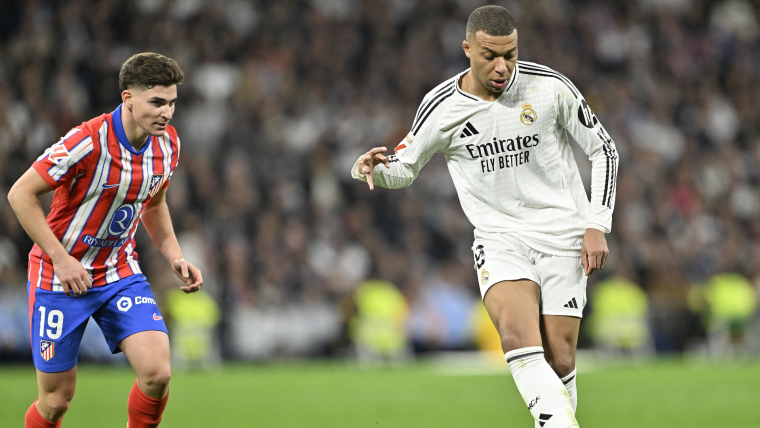

El equipo de Carlo Ancelotti mostró coraje en la segunda mitad, con su estrella francesa consiguiendo un punto en un feroz enfrentamiento rival. Kylian Mbappe tuvo su primera gran participación en un derbi madrileño, consiguiendo el empate en un típico empate 1-1 que no estuvo exento de controversia. El Atlético de Madrid se adelantó en la primera mitad después de que una larga revisión del VAR les regalara un penalti suave. Los Blancos se mostraron más enérgicos después del descanso y merecían el empate. El Atleti tomó la delantera a los 34 minutos cuando Julián Álvarez convirtió desde el punto de penalti. El argentino se presentó después de que se juzgara que Aurelien Tchouameni había golpeado a Samuel Lino, y el argentino lanzó el balón con sutileza por el centro para dar a su equipo una ventaja de 1-0. Los Blancos, por su parte, crearon poco y no lograron disparar a puerta en la primera mitad. El Madrid despertó en el segundo tiempo. Mbappe proporcionó el empate, aprovechando un balón suelto y lanzando un disparo desviado al rincón inferior, superando a un Jan Oblak varado. Casi fue 2-1 poco después, pero Jude Bellingham chocó el travesaño con un cabezazo.
